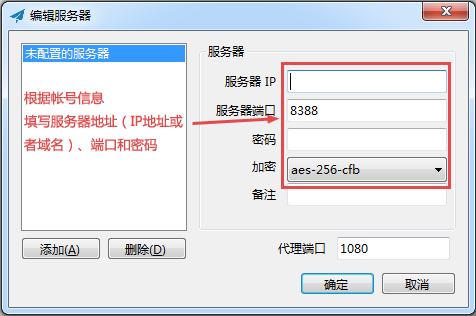
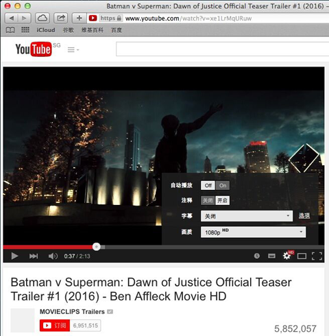
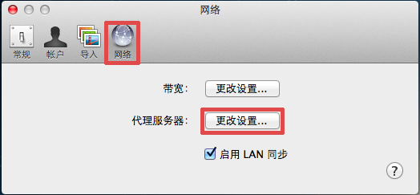
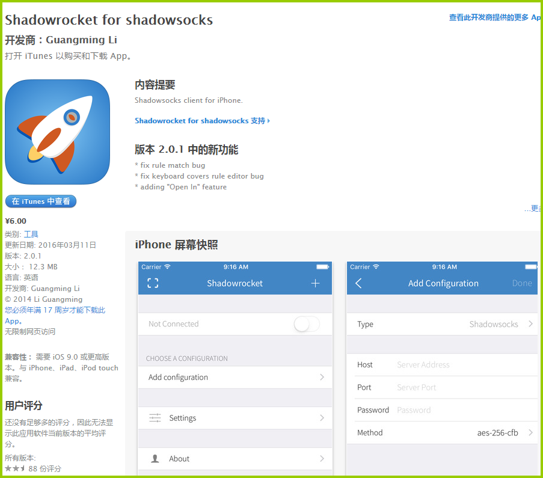

第一、下载ss软件（请使用下面的版本，暂时不要更新至最新版本的客户端）
第二、解压到任意目录，运行其中的shadow socks.exe

第三、首次运行，会弹出编辑服务器窗口，按图示填写您的SHADOW SOCKS服务器地址，端口，密码和加密方式，点确定

点确定后，会如下提示
第四、按提示右键程序图标，弹出菜单，勾选“启用系统代理”

好了，大功告成，打开任意浏览器上网吧，就是这么简单，就是这么任性，设置好以后，IE/Chrome/Firefox无需设置，直接打开网址即可

常见问题：
问：如何关闭？
答：退出程序就OK了
问：PAC和全局模式是什么意思？
答：PAC模式下：访问国内网站不通过服务器，全局模式下：所有网站都通过服务器
ss使用教程-ANDROID
第一、下载安卓的SHADOWSOCKS软件，安卓上叫“影梭”（请使用下面的版本，暂时不要更新至最新版本的客户端）
第二、安装下载的APK文件，安装完成后打开“影梭”

第三、按图示填写您的SHADOWSOCKS服务器地址，端口，密码和加密方式，右上方拖动打开
第四、勾选我信任此软件，点“确定”，开始连接
连接成功后，最上面会出现一把锁的图标，此时，打开你喜欢的应用吧，比如TWITTER、INSTAGRAM
再次打开“影梭”，拖动即可断开连接
也可以在屏幕下拉菜单中，选中关闭

常见问题：
无需root即可使用
浏览器和App都可以代理，和VPN效果完全一样
ss使用教程-Mac OS X
第一、下载用于MAC OS X的SHADOW SOCKSX软件（请使用下面的版本，暂时不要更新至最新版本的客户端）
第二、打开下载的DMG文件，将程序图标拖到右边的APPLICATIONS，安装完成

第三、进入LAUNCHPAD，打开SHADOW SOCKSX,右上方出现程序图标，点击图标–“服务器”–“打开服务器设定”

第四、根据帐号信息，填写服务器地址（IP或者域名），端口，加密方式和密码，点确定

第五、选择刚刚配置好的服务器，点“打开SHADOW SOCKS”，DONE!

打开SAFARI或者CHROME开始上网吧

有些应用需要单独设置，比如Dropbox：打开Dropbox首选项，“网络”–代理服务器“更改设置”，然后按下图设置即可


常见问题：
1.如果有网站打不开，或者图片刷不出来，切换全局试试
2.同样可以编辑PAC，自定义通过服务器代理的网站
ios不越狱使用ss-Shadowrocket使用教程
Surge一会下架一会涨价，作者发了N个声明后现在以600多的价格在App Store销售中，这也催生了很多类似的App作为替代品出现，Shadowrocket就是其中之一。从名字就可以看到功能和定位，作者比较低调但是修复bug倒是很快。

它与Surge的区别不在于代理形式，而是操作界面及自定义部分，配置文件适配Surge的可以快速扩大使用人群及降低使用成本，而且可以对Proxy和DNS部分做单独区别，并且可以强制本机的DNS，我们知道在iOS使用移动网络下是无法自定义DNS的，在运营商DNS已经干扰得不成样的情况下如果借助外部DNS还是会对网络体验有很大提升。
其次，我们可以指定DNS做转发，有条件的人可以自己做个专属的DNS转发服务器，扶墙最简单的方式莫过于此，从根本省却了SS这么复杂的方式。
最后还是价格，能买到，价格低，这就是足够的理由了，虽然还有部分bug，我相信作者也在尽快Fix的，多给人鼓励包容，让这类工具多出现总是好的。
使用教程：
1、配置文件
下载软件，进入Add configuration,
2、填写信息
配置SS信息,这里输入我们的虚幻帐号即可，如下：
3、开启软件，开始工作
点击连接，出现VPN标志表示工作正常。
说明：
- 我们与软件及作者无任何关联，只做个人推荐，所产生问题本人及本站概不负责。
ss连接不上问题排查
如果你连不上ss，
第一、请再三确认手动输入ip和密码没有填错，注意不要有多余空格
第二、请确认你是按照上面的教程进行配置的
第三、请拿谷歌官网：www.google.com/ncr 做测试
第四、重置浏览器缓存
第五、刷新DNS缓存，并修改dns为：8.8.8.8
第六、请在pac模式和全局模式来回切换并访问测试
第七、确保已卸载其他任意类型的翻墙软件及插件
第八、Chrome上代理配置错误或者其他扩展冲突，打开Chrome的设置，查看Chrome的代理处是否有其他扩展管理，有就停用。
第九、重启电脑
第十、ping服务器IP